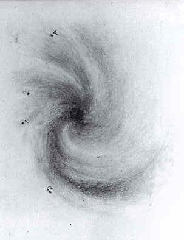
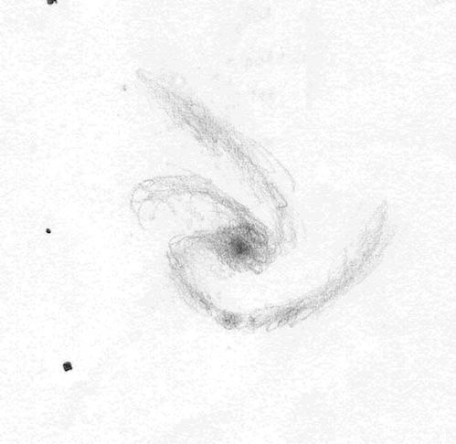
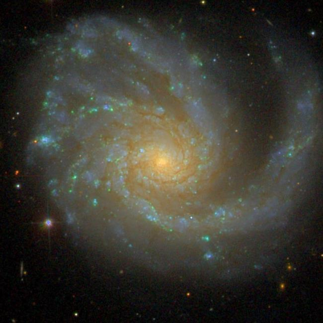

M99, the 2nd discovered Spiral
- Name: M99 = NGC 4254 = Pinwheel Galaxy (yes, another one)
- RA: 12 18 49.6
- Dec: +14 24 59 (Coma Berenices)
- Type: SA(s)c
- Size: 5.4' x 4.7'
- Mag: 9.9V, 10.4B
- Distance: ~50 million l.y. (Virgo cluster)
- NGC description: remarkable, bright, large, round, gradually brighter in the middle, resolvable, 3 branch spiral
I was surprised to find this fantastic spiral has never been featured as an Object of the Week! So, here goes.
M99 was discovered by Pierre Méchain on 15 Mar 1781, but it gained notoriety when William Parson, the third Earl of Rosse turned his 72-inch Leviathan to this "nebula" in April of 1846. A year earlier he made the astonishing discovery of the spiral structure of M51, but his time and interest was then diverted to deal with the Irish potato famine. He wrote, "the following spring [after the M51 discovery] an arrangement, also spiral but of a different character, was detected in 99 Messier, Plate XXXV, figure 2. This object is also easily seen, and probably a smaller instrument, under favorable circumstances, would show everything in the sketch."
The sketch he referred to was initiated on 11 Mar 1848 by his observing assistant William Rabat, who described M99 as a "Spiral with a bright star above; a thin portion of the nebula reaches across this star and some distance past it. *Principal spiral at the bottom, and turning towards the right.” His outstanding sketch, showing at least 4 arms, was published in the Philosophical Transactions of 1850, alongside his sketch of M51.

On a night in the 1970's not suited for photometric work at McDonald Observatory, Ron Buta (then a graduate student) made a quick sketch using a 30-inch

Although M99 is considered a grand-design spiral, there is definitely an asymmetry to its shape, with a somewhat off-center nucleus and dominated by a single "heavy" spiral arm on the south side. An interaction and merger was first suggested in the 1993 paper NGC 4254: A Spiral Galaxy with an M = 1 Mode and Infalling Gas. A more recent study Magnetic fields and gas in the cluster influenced spiral galaxy NGC 4254 states "[M99] seems to belong to the class of 'young' Virgo cluster members, which recently experienced a gravitational encounter at the cluster's periphery, which perturbed its spiral arms by tidal forces and triggered a burst of star-formation which still maintains strong radio and infrared emissions."
M99 was one of the first galaxies I observed showing spiral structure (mainly the long arm that sweeps across the south side) using my 13.1-inch back in 1982. What a thrill! Of course, I've returned to this galaxy numerous times since in a variety of scopes, but a favorite observation was perhaps 7 years back, when I first got a peak through Jimi's 48-inch ...
Stunning view of this beautiful, asymmetric two-armed spiral at 375x. The brighter, more open arm is attached on the east side of the very bright core. It unwinds beautifully and expands counterclockwise for ~225° where it ends to the NW of center. As the arm passes south of the core there is a bright, well defined knot (sketched and later measured 0.9' S of the nucleus) with two additional diffuse knots in this arm 1.2' SW of center and 1.9' W of center. The arm continues to sweep north on the west side, where it is well separated from the main body. A second long sweeping fainter arm is attached on the west side of the core and unfolds counterclockwise towards the NE. It contains a diffuse knot ~1.2' NNW of center and terminates near an ill-defined knot 2' NE of center. The halo of the galaxy is more extensive on this side and contains a prominent knot 1.8' E of center. This knot is at the end of another more ill-defined arm on the north side of the core heading east that contains additional mottled clumps. The galaxy is sharply concentrated with a brilliant 1' core that increases to a sharp stellar nucleus.
SDSS image

Give it a go and let us know!